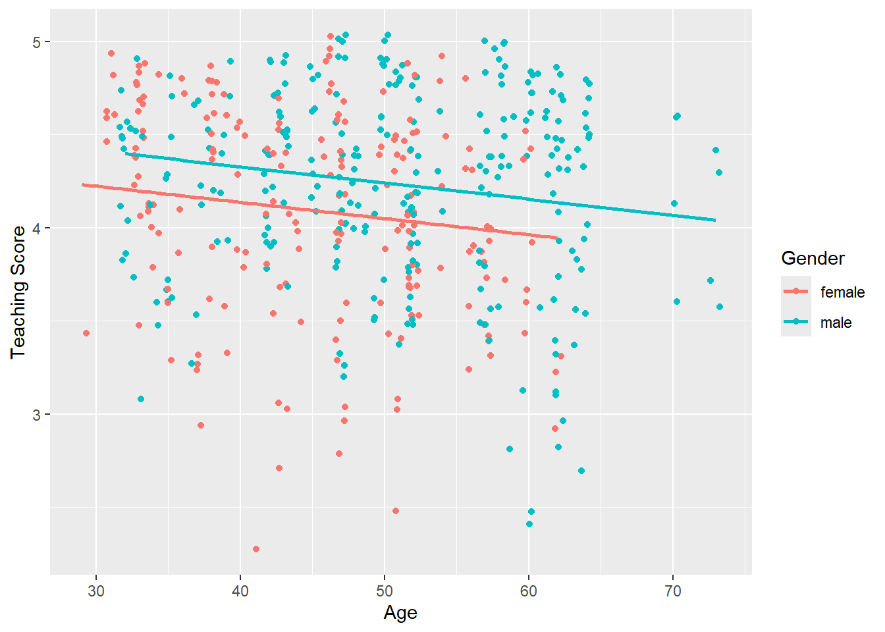
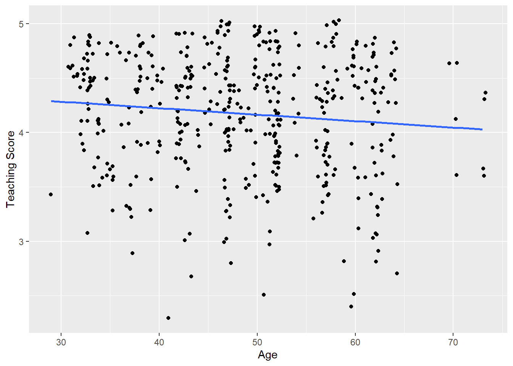
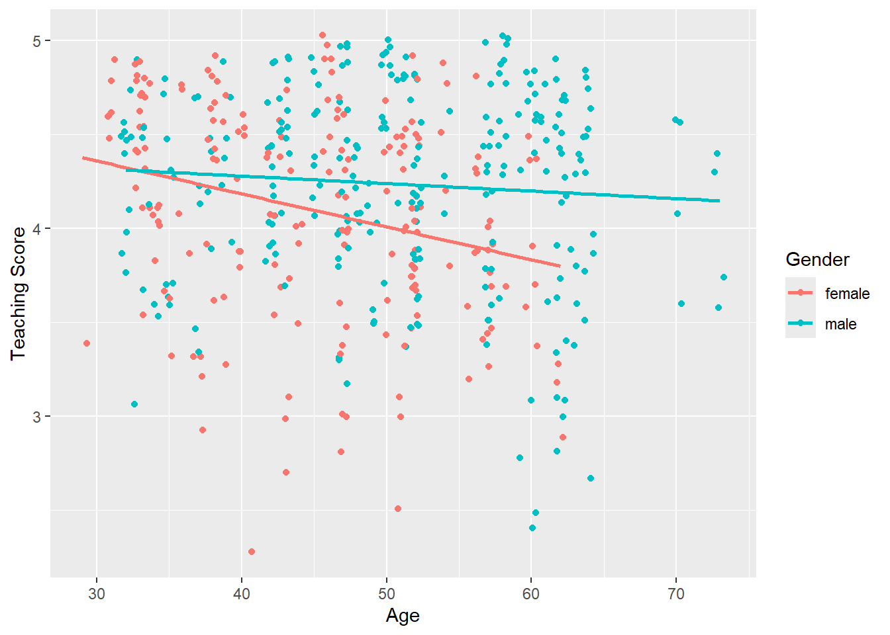

1 Regression modelling with one numerical and one categorical explanatory variable
Let’s expand upon what we learned last week by revisiting the instructor evaluation data set evals. In Week 3 you were tasked with examining the relationship between teaching score (score) and age (age). Now, let’s also introduce the additional (binary) categorical explanatory variable gender (gender). That is, we we will be examining:
the teaching score (score) as our outcome variable \(y\);
age (age) as our numerical explanatory variable \(x_1\); and
gender (gender) as our categorical explanatory variable \(x_2\).
1.1 Exploratory data analysis
Start by subsetting the evals data set so that we only have the variables we are interested in, that is, score, age and gender. Note, it is best to give your new data set a different name than evals as to not overwrite the original evals data set. Your new data set should look like the one below.
Question
You can also view your data set using the glimpse function, or by opening a spreadsheet view in RStudio using the View function.
Use the skim function to obtain some summary statistics from our data:
Code
eval.score|>skim()
Data summary
Name
eval.score
Number of rows
463
Number of columns
14
_______________________
Column type frequency:
factor
7
numeric
7
________________________
Group variables
None
Variable type: factor
skim_variable
n_missing
complete_rate
ordered
n_unique
top_counts
gender
0
1
FALSE
2
mal: 268, fem: 195
ethnicity
0
1
FALSE
2
not: 399, min: 64
language
0
1
FALSE
2
eng: 435, non: 28
rank
0
1
FALSE
3
ten: 253, ten: 108, tea: 102
pic_outfit
0
1
FALSE
2
not: 386, for: 77
pic_color
0
1
FALSE
2
col: 385, bla: 78
cls_level
0
1
FALSE
2
upp: 306, low: 157
Variable type: numeric
skim_variable
n_missing
complete_rate
mean
sd
p0
p25
p50
p75
p100
hist
ID
0
1
232.00
133.80
1.00
116.50
232.00
347.5
463.00
▇▇▇▇▇
prof_ID
0
1
45.15
27.55
1.00
20.00
43.00
70.5
94.00
▇▇▆▆▆
score
0
1
4.17
0.54
2.30
3.80
4.30
4.6
5.00
▁▁▅▇▇
age
0
1
48.37
9.80
29.00
42.00
48.00
57.0
73.00
▅▆▇▆▁
bty_avg
0
1
4.42
1.53
1.67
3.17
4.33
5.5
8.17
▃▇▇▃▂
cls_did_eval
0
1
36.62
45.02
5.00
15.00
23.00
40.0
380.00
▇▁▁▁▁
cls_students
0
1
55.18
75.07
8.00
19.00
29.00
60.0
581.00
▇▁▁▁▁
Now, let’s compute the correlation coefficient between our outcome variable score and our numerical explanatory variable age:
Code
eval.score|>get_correlation(formula =score~age)
# A tibble: 1 × 1
cor
<dbl>
1 -0.107
Question
Why do we not include the categorical variable gender when calculating the correlation?
The correlation coefficient only exists between numerical variables, which is why we do not include our categorical variable gender.
We can now visualise our data by producing a scatterplot, where seeing as we have the categorical variable gender, we shall plot the points using different colours for each gender:
Code
ggplot(eval.score, aes(x =age, y =score, color =gender))+geom_jitter()+labs(x ="Age", y ="Teaching Score", color ="Gender")+geom_smooth(method ="lm", se =FALSE)
Instructor evaluation scores by age and gender. The points have been jittered.
Note: The above code has jittered the points, however, this is not necessary and geom_point would suffice. To plot separate points by gender we simply add the color argument to the aes function and pass to it gender.
From the scatterplot we can see that:
There are very few women over the age of 60 in our data set.
From the plotted regression lines we can see that the lines have different slopes for men and women. That is, the associated effect of increasing age appears to be more severe for women than it does for men, i.e. the teaching score of women drops faster with age.
1.2 Multiple regression: parallel slopes model
Here, we shall begin by fitting what is referred to as a parallel regression lines model. This model implies that the slope of relationship between teaching score (score) and age (age) is the same for both males and females, with only the intercept of the regression lines changing. Hence, our parallel regression lines model is given as:
We can fit the parallel regression lines model as follows:
Code
lm_spec<-linear_reg()|>set_engine("lm")par.model<-lm_spec|>fit(score~age+gender, data =eval.score)par.model<-par.model|>extract_fit_engine()get_regression_table(par.model)
\[\widehat{\mbox{score}} = 4.48 - 0.009 \cdot \mbox{age} + 0.191 = 4.671 - 0.009 \cdot \mbox{age}.\] Now, let’s superimpose our parallel regression lines onto the scatterplot of teaching score against age:
Code
ggplot(eval.score, aes(x =age, y =score, color =gender))+geom_jitter()+labs(x ="Age", y ="Teaching Score", color ="Gender")+geom_parallel_slopes(se =FALSE)

Instructor evaluation scores by age and gender with parallel regression lines superimposed.
Note: go through the code used to create coeff and slopes and make sure you understand it.
From the parallel regression lines model both males and females have the same slope, that is, the associated effect of age on teaching score is the same for both men and women. Hence, for every one year increase in age, there is an associated decrease in teaching score of 0.009. However, male instructors have a higher intercept term, that is, there is a vertical bump in the regression line for males in teaching scores. This is linked to the average difference in teaching scores that males obtain relative to females.
Question
What is different between our previous scatterplot of teaching score against age (Figure 6) and the one we just created with our parallel lines superimposed (Figure 7)?
In the original plot we have what is referred to as an interaction effect between age and gender. Hence, gender interacts in different ways for both males and females by age, and as such we should have different intercepts and slopes.
1.3 Multiple regression: interaction model
There is an interaction effect if the associated effect of one variable depends on the value of another variable. For example, the effect of age here will depend on whether the instructor is male or female, that is, the effect of age on teaching scores will differ by gender. The interaction model can be written as:
where \(\beta_{\mbox{age, male}} \cdot \mbox{age} \cdot \mathbb{I}_{\mbox{male}}(x)\) corresponds to the interaction term.
In order to fit an interaction term within our regression model we replace the + sign with the * sign as follows:
Code
lm_spec<-linear_reg()int.model<-lm_spec|>fit(score~age*gender, data =eval.score)int.model<-int.model|>extract_fit_engine()get_regression_table(int.model)
How do they compare with the teaching score values from the parallel regression lines model?
Here, we can see that, although the intercept for male instructors may be lower, the associated average decrease in teaching score with age (0.004) is not as severe as it is for female instructors (0.018).
1.4 Assessing model fit
Now we have to assess the fit of the model by looking at plots of the residuals. We shall do this for the interaction model. First, we need to obtain the fitted values and residuals from the interaction model as follows:
Let’s start by looking at a scatterplot of the residuals against the explanatory variable by gender:
Code
ggplot(regression.points, aes(x =age, y =residual))+geom_point()+labs(x ="age", y ="Residual")+geom_hline(yintercept =0, col ="blue", size =1)+facet_wrap(~gender)
Residuals vs the explanatory variable age by gender.
Now, we can plot the residuals against the fitted values:
Code
ggplot(regression.points, aes(x =score_hat, y =residual))+geom_point()+labs(x ="Fitted values", y ="Residual")+geom_hline(yintercept =0, col ="blue", size =1)+facet_wrap(~gender)
Residuals vs the fitted values.
Finally, let’s plot histograms of the residuals to assess whether they are normally distributed with mean zero:
Code
ggplot(regression.points, aes(x =residual))+geom_histogram(binwidth =0.25, color ="white")+labs(x ="Residual")+facet_wrap(~gender)
Histograms of the residuals by gender.
2 Sample statistics
This week, and in previous weeks, we have seen many examples of calculating sample statistics such as means, percentiles, standard deviations and regression coefficients. These sample statistics are used as point estimates of population parameters which describe the population from which the sample of data was taken. That last sentence assumes you’re familiar with concepts and terminology about sampling (e.g. from the Statistical Inference course in 1st Semester) so here is a summary of some key terms:
Population: The population is a set of \(N\) observations of interest.
Population parameter: A population parameter is a numerical summary value about the population. In most settings, this is a value that’s unknown and you wish you knew it.
Census: An exhaustive enumeration/counting of all observations in the population in order to compute the population parameter’s numerical value exactly.
When \(N\) is small, a census is feasible. However, when \(N\) is large, a census can get very expensive, either in terms of time, energy, or money.
Sampling: Collecting a sample of size \(n\) of observations from the population. Typically the sample size \(n\) is much smaller than the population size \(N\), thereby making sampling a much cheaper procedure than a census.
It is important to remember that the lowercase \(n\) corresponds to the sample size and uppercase \(N\) corresponds to the population size, thus \(n \leq N\).
Point estimates/sample statistics: A summary statistic based on the sample of size \(n\) that estimates the unknown population parameter.
Representative sampling: A sample is said be a representative sample if it “looks like the population”. In other words, the sample’s characteristics are a good representation of the population’s characteristics.
Generalisability: We say a sample is generalisable if any results based on the sample can generalise to the population.
Bias: In a statistical sense, we say bias occurs if certain observations in a population have a higher chance of being sampled than others. We say a sampling procedure is unbiased if every observation in a population had an equal chance of being sampled.
Random sampling: We say a sampling procedure is random if we sample randomly from the population in an unbiased fashion.
2.1 Inference using sample statistics
The table below lists a variety of contexts where sample statistics can be used to estimate population parameters. In all 6 cases, the point estimate/sample statistic estimates the unknown population parameter. It does so by computing summary statistics based on a sample of size \(n\). We’ll cover Scenarios 5 and 6, namely construct CIs for the parameters in simple and multiple linear regression models. We will consider CIs based on theoretical results when standard assumptions hold, although sampling procedures such as bootstrap also exist. We will also consider how to use CIs for variable selection and finish by considering a model selection strategy based on objective measures for model comparisons.
Table 1: Scenarios of sample statistics for inference.
Scenario
Population Parameter
Population Notation
Sample Statistic
Sample Notation
1
Population proportion
\(p\)
Sample proportion
\(\widehat{p}\)
2
Population mean
\(\mu\)
Sample mean
\(\bar{x}\)
3
Diff.in pop. props
\(p_1 - p_2\)
Diff. in sample props
\(\widehat{p}_1 - \widehat{p}_2\)
4
Diff. in pop. means
\(\mu_1 - \mu_2\)
Diff. in sample means
\(\bar{x}_1 - \bar{x}_2\)
5
Pop. intercept
\(\beta_0\)
Sample intercept
\(\widehat{\beta}_0\) or \(b_0\)
6
Pop. slope
\(\beta_1\)
Sample slope
\(\widehat{\beta}_1\) or \(b_1\)
In reality, we don’t have access to the population parameter values (if we did, why would we need to estimate them?) we only have a single sample of data from a larger population. We’d like to be able to make some reasonable guesses about population parameters using that single sample to create a range of plausible values for a population parameter. This range of plausible values is known as a confidence interval.
There are theoretical ways of defining confidence intervals for these different scenarios (such as you saw in ‘Statistical Inference’ in Semester 1). But we can also use a single sample to get some idea of how other samples might vary in terms of their sample statistics, i.e. to estimate the sampling distributions of sample statistics. One common way this is done is via a process known as bootstrapping.
The confidence intervals we will see this week are calculated using the theoretical results based on the standard assumptions that you will have seen in Regression Modelling in first semester. These values are not based on bootstrapping techniques since these become much harder to implement when working with multiple variables and its beyond the scope of this course.
3 Constructing confidence intervals
A confidence interval gives a range of plausible values for a population parameter. It depends on a specified confidence level with higher confidence levels corresponding to wider confidence intervals and lower confidence levels corresponding to narrower confidence intervals. Common confidence levels include 90%, 95%, and 99%.
Confidence intervals are simple to define and play an important role in the sciences and any field that uses data. You can think of a confidence interval as playing the role of a net when fishing. Instead of just trying to catch a fish with a single spear (estimating an unknown parameter by using a single point estimate/sample statistic), we can use a net to try to provide a range of possible locations for the fish (use a range of possible values based around our sample statistic to make a plausible guess as to the location of the parameter).
3.1 Confidence Intervals for Regression Parameters
To illustrate this, let’s have another look at teaching evaluations data evals in the moderndive package that we used in Week 3 and start with the SLR model with age as the the single explanatory variable and the instructors’ evaluation scores as the response variable. This data and the fitted model are shown here.
Code
slr.model<-linear_reg()slr.model<-slr.model|>fit(score~age, data =evals)
(Intercept) age
4.461932354 -0.005938225

Figure 1: SLR model applied to the teaching evaluation Data.
The point estimate of the slope parameter here is \(\widehat{\beta}=\) -0.006.
Let’s continue with the teaching evaluations data by fitting the multiple regression model with one numerical and one categorical explanatory variable. In this model:
\(y\): response variable of instructor evaluation score
explanatory variables
\(x_1\): numerical explanatory variable of age
\(x_2\): categorical explanatory variable of gender
Code
evals_multiple<-evals|>select(score, gender, age)
First, recall that we had two competing potential models to explain professors’ teaching evaluation scores:
Model 1: Parallel lines model (no interaction term) - both male and female professors have the same slope describing the associated effect of age on teaching score
Model 2: Interaction model - allowing for male and female professors to have different slopes describing the associated effect of age on teaching score
Refresher: Visualisations
Recall the plots we made for both these models:
Model 1: Parallel regression lines.

Model 2: Separate regression lines.
Refresher: Regression tables
Let’s also recall the regression models. First, the regression model with no interaction effect: note the use of + in the formula.
Code
par.model<-linear_reg()par.model<-par.model|>fit(score~age+gender, data =evals_multiple)|>extract_fit_engine()get_regression_table(par.model)|>knitr::kable( digits =3, caption ="Model 1: Regression model with no interaction effect included.", booktabs =TRUE)
Model 1: Regression model with no interaction effect included.
term
estimate
std_error
statistic
p_value
lower_ci
upper_ci
intercept
4.484
0.125
35.792
0.000
4.238
4.730
age
-0.009
0.003
-3.280
0.001
-0.014
-0.003
gender: male
0.191
0.052
3.632
0.000
0.087
0.294
Second, the regression model with an interaction effect: note the use of * in the formula.
Code
int.model<-linear_reg()int.model<-int.model|>fit(score~age*gender, data =evals_multiple)|>extract_fit_engine()get_regression_table(int.model)|>knitr::kable( digits =3, caption ="Model 2: Regression model with interaction effect included.", booktabs =TRUE)
Model 2: Regression model with interaction effect included.
term
estimate
std_error
statistic
p_value
lower_ci
upper_ci
intercept
4.883
0.205
23.795
0.000
4.480
5.286
age
-0.018
0.004
-3.919
0.000
-0.026
-0.009
gender: male
-0.446
0.265
-1.681
0.094
-0.968
0.076
age:gendermale
0.014
0.006
2.446
0.015
0.003
0.024
Notice that, together with the estimated parameter values, the tables include other information about each estimated parameter in the model, namely:
std_error: the standard error of each parameter estimate;
statistic: the test statistic value used to test the null hypothesis that the population parameter is zero;
p_value: the \(p\) value associated with the test statistic under the null hypothesis; and
lower_ci and upper_ci: the lower and upper bounds of the 95% confidence interval for the population parameter
These values are calculated using the theoretical results based on the standard assumptions that you will have seen in Regression Modelling in first semester. Theses values are not based on bootstrapping techniques but theoretical results since these become much harder to implement when working with multiple variables and its beyond the scope of this course.
4 Inference using Confidence Intervals
Having described several ways of calculating confidence intervals for model parameters, we are now in a position to interpret them for the purposes of statistical inference.
Simple Linear Regression:\(\widehat{y}_i = \alpha + \beta x_i\)
Whether we have obtained a confidence interval for \(\beta\) in a simple linear regression model via bootstrapping or theoretical results based on assumptions, the interpretation of the interval is the same. As we saw in Week 7,
A confidence interval gives a range of plausible values for a population parameter.
We can therefore use the confidence interval for \(\beta\) to state a range of plausible values and, just as usefully, what values are not plausible. The most common value to compare the confidence interval of \(\beta\) with is 0 (zero), since \(\beta = 0\) says there is no (linear) relationship between the response variable (\(y\)) and the explanatory variable (\(x\)). Therefore, if 0 lies within the confidence interval for \(\beta\) then there is insufficient evidence of a linear relationship between \(y\) and \(x\). However, if 0 does not lie within the confidence interval, then we conclude that \(\beta\) is significantly different from zero and therefore that there is evidence of a linear relationship between \(y\) and \(x\).
Let’s use the confidence interval based on theoretical results for the slope parameter in the SLR model applied to the teacher evaluation scores with age as the the single explanatory variable and the instructors’ evaluation scores as the outcome variable.
Code
get_regression_table(slr.model)|>knitr::kable( digits =3, caption ="Estimates from the SLR model of `score` on `age`.", booktabs =TRUE)
Estimates from the SLR model of score on age.
term
estimate
std_error
statistic
p_value
lower_ci
upper_ci
intercept
4.462
0.127
35.195
0.000
4.213
4.711
age
-0.006
0.003
-2.311
0.021
-0.011
-0.001
Multiple Regression
Consider, again, the fitted interaction model for score with age and gender as the two explanatory variables.
Code
int.model<-linear_reg()int.model<-int.model|>fit(score~age*gender, data =evals_multiple)|>extract_fit_engine()get_regression_table(int.model)
Model 2: Regression model with interaction effect included.
term
estimate
std_error
statistic
p_value
lower_ci
upper_ci
intercept
4.883
0.205
23.795
0.000
4.480
5.286
age
-0.018
0.004
-3.919
0.000
-0.026
-0.009
gender: male
-0.446
0.265
-1.681
0.094
-0.968
0.076
age:gendermale
0.014
0.006
2.446
0.015
0.003
0.024
5 Variable selection using confidence intervals
When there is more than one explanatory variable in a model, the parameter associated with each explanatory variable is interpreted as the change in the mean response based on a 1-unit change in the corresponding explanatory variable keeping all other variables held constant. Therefore, care must be taken when interpreting the confidence intervals of each parameter by acknowledging that each are plausible values conditional on all the other explanatory variables in the model.
Because of the interdependence between the parameter estimates and the variables included in the model, choosing which variables to include in the model is a rather complex task. We will introduce some of the ideas in the simple case where we have 2 potential explanatory variables (\(x_1\) and \(x_2\)) and use confidence intervals to decide which variables will be useful in predicting the response variable (\(y\)).
One approach is to consider a hierarchy of models:
Within this structure we might take a top-down approach:
Fit the most general model, i.e. \(y_i = \alpha + \beta_1 x_{1i} + \beta_2 x_{2i}\) since we believe this is likely to provide a good description of the data
Construct confidence intervals for \(\beta_1 ~\textrm{and} ~\beta_2\)
If both intervals exclude 0 then retain the model with both \(x_1\) and \(x_2\).
If the interval for \(\beta_1\) contains 0 but that for \(\beta_2\) does not, fit the model with \(x_2\) alone.
If the interval for \(\beta_2\) contains 0 but that for \(\beta_1\) does not, fit the model with \(x_1\) alone.
If both intervals include 0 it may still be that a model with one variable is useful. In this case the two models with the single variables should be fitted and intervals for \(\beta_1\) and \(\beta_2\) constructed and compared with 0.
If we have only a few explanatory variables, then an extension of the strategy outlined above would be effective, i.e. start with the full model and simplify by removing terms until no further terms can be removed. When the number of explanatory variables is large the problem becomes more difficult. We will consider this more challenging situation in the next section.
Recall that as well as age and gender, there is also a potential explanatory variable bty_avg in the evals data, i.e. the numerical variable of the average beauty score from a panel of six students’ scores between 1 and 10. We can fit the multiple regression model with the two continuous explanatory variables age and bty_avg as follows:
Code
mlr.model<-linear_reg()mlr.model<-mlr.model|>fit(score~age+bty_avg, data =evals)|>extract_fit_engine()
Estimates from the MLR model with age and bty_avg.
term
estimate
std_error
statistic
p_value
lower_ci
upper_ci
intercept
4.055
0.170
23.870
0.000
3.721
4.389
age
-0.003
0.003
-1.148
0.251
-0.008
0.002
bty_avg
0.061
0.017
3.548
0.000
0.027
0.094
6 Model comparisons using objective criteria
As was noted in the last section, when the number of potential explanatory variables is large the problem of selecting which variables to include in the final model becomes more difficult. The selection of a final regression model always involves a compromise:
Predictive accuracy (improved by including more predictor/explanatory variables)
Interpretability (achieved by having less predictor/explanatory variables)
There are many objective criteria for comparing different models applied to the same data set. All of them trade off the two objectives above, i.e. fit to the data against complexity. Common examples include:
The \(R^2_{adj}\) values, i.e. the proportion of the total variation of the response variable explained by the models.
A value based on the maximum likelihood function of the parameters in the fitted model penalised by the number of parameters in the model
It be used to compare any models fitted to the same response variable
The smaller the AIC the ‘better’ the model, i.e. no distributional results are employed to assess differences
See the stepAIC function from the MASS library that was mention in Week 6.
Bayesian Information Criteria
\[BIC = -2 \cdot \mbox{log-likeihood} +\ln(n)p\]
A popular data analysis strategy that can be adopted is to calculate \(R_{adj}^2\), \(AIC\) and \(BIC\) and compare the models which minimise the \(AIC\) and \(BIC\) with the model that maximises the \(R_{adj}^2\).
To illustrate this, let’s return to the evals data and the MLR on the teaching evaluation score score with the two continuous explanatory variables age and bty_avg and compare this with the SLR model with just bty_avg. To access these measures for model comparisons we can use the glance function in the broom package (not to be confused with the glimpse function from the dplyr package). Here, for the sake of simplicity, we simply use the lm function.
Code
model.comp.values.slr.age<-glance(lm(score~age, data =evals))
Note that \(R_{adj}^2\), \(AIC\) and \(BIC\) are contained in columns 2, 9 and 10 respectively. To access just these values and combine them in a single table we use:
Code
Models<-c('SLR(age)','SLR(bty_avg)','MLR')bind_rows(model.comp.values.slr.age, model.comp.values.slr.bty_avg, model.comp.values.mlr, .id ="Model")|>select(Model, adj.r.squared, AIC, BIC)|>mutate(Model =Models)|>kable( digits =2, caption ="Model comparison values for different models.", )
Model comparison values for different models.
Model
adj.r.squared
AIC
BIC
SLR(age)
0.01
749.62
762.03
SLR(bty_avg)
0.03
738.44
750.86
MLR
0.03
739.12
755.67
7 A final word on model selection
A great deal of care should be taken in selecting predictor/explanatory variables for a model because the values of the regression coefficients depend upon the variables included in the model. Therefore, the predictors included and the order in which they are entered into the model can have great impact. In an ideal world, predictors should be selected based on past research and new predictors should be added to existing models based on the theoretical importance of the variables. One thing not to do is select hundreds of random predictors, bung them all into a regression analysis and hope for the best.
But in practice there are automatic strategies, such as Stepwise (see Week 6 on stepwise regression using AIC) and Best Subsets regression, based on systematically searching through the entire list of variables not in the current model to make decisions on whether each should be included. These strategies need to be handled with care, and a proper discussion of them is beyond this course. Our best strategy is a mixture of judgement on what variables should be included as potential explanatory variables, together with an interval estimation and hypothesis testing strategy for assessing these. The judgement should be made in the light of advice from the problem context.
Golden rule for modelling
The key to modelling data is to only use the objective measures as a rough guide. In the end the choice of model will involve your own judgement. You have to be able to defend why you chose a particular model.